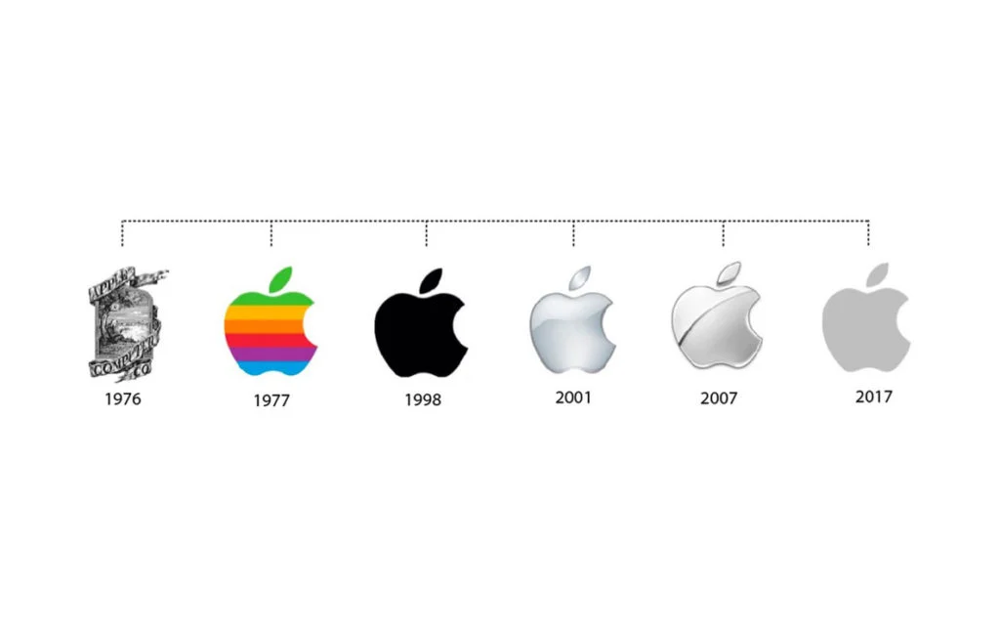

Microcomputador Microdigital TK3000 IIe
Artigo da Wikipédia sobre o microcomputador Microdigital TK3000 IIe
Artigo wiki local sobre o microcomputador Microdigital TK3000 IIe

Fonte: Logoloop
Fonte: TK2000 II Color Computer Emulator